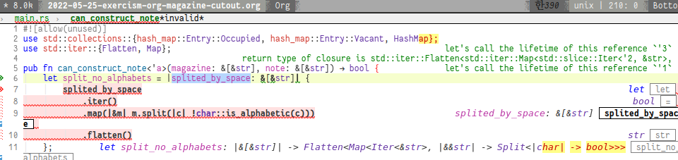

Introductions
latest version of task: found at here
In this exercise you’ll be using a HashMap, along with entry API methods, to solve a simple algorithm problem.
Given &[&str] representing the words of a magazine article, and &[&str] representing the words of a note you would like to send, can you compose your note by cutting words out of the magazine and pasting them into a letter?
Notes:
This implies physical cutting and pasting; the magazine needs to contain at least as many copies of each word as the note requires. Capitalization matters; just because you’re pasting together a note composed from words of a magazine doesn’t mean you’re willing to be ungrammatical.
You’ll start with the following stubbed function signature:
pub fn can_construct_note(magazine: &[&str], note: &[&str]) -> bool {
unimplemented!()
}Given the following input
let magazine = "two times three is not four".split_whitespace().collect::<Vec<&str>>();
let note = "two times two is four".split_whitespace().collect::<Vec<&str>>();
assert!(!can_construct_note(&magazine, ¬e));The function returns false since the magazine only contains one instance of “two” when the note requires two of them.
The following input will succeed:
let magazine = "Astronomer Amy Mainzer spent hours chatting with Leonardo DiCaprio for Netflix's 'Don't Look Up'".split_whitespace().collect::<Vec<&str>>();
let note = "Amy Mainzer chatting with Leonardo DiCaprio."
.split_whitespace()
.collect::<Vec<&str>>();
assert!(can_construct_note(&magazine, ¬e));Incorrect Introduction
If introduction is correct, most of other’s solution are not working, however they seem get passed all the test codes,
I guess there might be some mistakes on .split_whitespace() function.
because DiCaprio in last example code, it will be devided into:
["Amy", "Mainzer", "chatting", "with", "Leonardo", "DiCaprio."]Please note on punctuation in the end of “DiCaprio.” and below code is an example solution from community.
credit: https://exercism.org/tracks/rust/exercises/magazine-cutout/solutions/surfingtomchen
use std::collections::HashMap;
pub fn can_construct_note_others(magazine: &[&str], note: &[&str]) -> bool {
let magazine_words = magazine.iter().fold(HashMap::new(), |mut words, str| {
*words.entry(str).or_insert(0) += 1;
words
});
let note_words = note.iter().fold(HashMap::new(), |mut words, str| {
*words.entry(str).or_insert(0) += 1;
words
});
note_words
.iter()
.all(&|(w, count)| magazine_words.get(w).unwrap_or(&0) >= count)
}
pub fn main() {
let magazine = "Astronomer Amy Mainzer spent hours chatting with Leonardo DiCaprio for Netflix's 'Don't Look Up'".split_whitespace().collect::<Vec<&str>>();
let note = "Amy Mainzer chatting with Leonardo DiCaprio."
.split_whitespace()
.collect::<Vec<&str>>();
assert!(can_construct_note_others(&magazine, ¬e));
}This one is really clean code in my opinion, however the test code given in introduction doesn’t allow this code to pass.
thread 'main' panicked at 'assertion failed: can_construct_note_others(&magazine, ¬e)', src/main.rs:57:5
note: run with `RUST_BACKTRACE=1` environment variable to display a backtrace
cargo-run exited abnormally with code 101 at Wed May 25 22:29:47Because my solution was uploaded via web editor only (you can also upload with exercism command-line tool), To solve the problem according to instruction. So my solution has become little more complicated.
To Divide the note correctly
To split the note correctly, the seperator should be something like non-alphabetic characters.
So even though we get the words separated by white space (.split_whitespace()),
we should do something like this: (note: this is pseudo code)
fn split_no_alphabets (splited_by_space: &[&str]) -> &[&str] {
splited_by_space
.iter()
.map(|&m| m.split (|c| !c.is_alphabetic))
.flatten() // is required to maintain the same depth as original input
}However I got many error message from complier.
cutout)
error[E0106]: missing lifetime specifier
--> src/main.rs:5:54
|
5 | fn split_no_alphabets (splited_by_space: &[&str]) -> &[&str] {
| ------- ^ expected named lifetime parameter
|
= help: this function's return type contains a borrowed value, but the signature does not say which one of `splited_by_space`'s 2 lifetimes it is borrowed from
help: consider introducing a named lifetime parameter
|
5 | fn split_no_alphabets<'a> (splited_by_space: &'a [&str]) -> &'a [&str] {
| ++++ ++ ++
error[E0106]: missing lifetime specifier
--> src/main.rs:5:56
|
5 | fn split_no_alphabets (splited_by_space: &[&str]) -> &[&str] {
| ------- ^ expected named lifetime parameter
|
= help: this function's return type contains a borrowed value, but the signature does not say which one of `splited_by_space`'s 2 lifetimes it is borrowed from
help: consider introducing a named lifetime parameter
|
5 | fn split_no_alphabets<'a> (splited_by_space: &'a [&str]) -> &[&'a str] {
| ++++ ++ ++Lifetime??
I got error message because splited_by_space is a reference to somewhere else, when I return the referece which is based on the reference from outside, rust must know life time of the variable correctly.
Otherwise rust is unable to manage the variable life time and failed to collect any garbage. (still my base knowledge of rust is not sufficient to talk about further)
Closure can be handy
But when I use let and closure (which is shown below) the problem is easier to
solve thanks to smart LSP. let me introduce closure quickly.
(and this kind of function very simliar to functional language which I preferred.)
closures introduction from rust-lang.org
Closures are functions that can capture the enclosing environment. For example, a closure that captures the x variable:
| val | val + xThe syntax and capabilities of closures make them very convenient for on the fly usage. Calling a closure is exactly like calling a function. However, both input and return types can be inferred and input variable names must be specified.
I’d like to focus on last sentence. i.e:
both input and return types can be inferred.
LSP and inferred types
When we type some variable or closure inside a function, LSP will print out something useful information around the code, we could easily find out the correct type of variable or the suitable type of returning value in context.
pub fn can_construct_note<'a>(magazine: &[&str], note: &[&str]) -> bool {
let split_no_alphabets = |splited_by_space: &[&str]| {
splited_by_space
.iter()
.map(|&m| m.split(|c| !char::is_alphabetic(c)))
.flatten()
};
// snip ...the screenshot captured in emacs

However, information is a bit limited. we’d better compile to get more messages.
compile and get more information
Rust complier is quite clever for user to fix the error or create a better code by introduce that what cause the problem and how to fix it. It is not perfect but most of times give me many clues to fix it. So, if the code is being compiled, the help messages are given as below:
Compiling magazine-cutout v0.1.0 (/home/myoungjin/my.github/exercism-rust/magazine-cutout)
error: lifetime may not live long enough
--> src/main.rs:7:9
|
6 | let split_no_alphabets = |splited_by_space: &[&str]| {
| - - return type of closure is Flatten<Map<std::slice::Iter<'2, &str>, [closure@src/main.rs:9:18: 9:59]>>
| |
| let's call the lifetime of this reference `'1`
7 | / splited_by_space
8 | | .iter()
9 | | .map(|&m| m.split(|c| !char::is_alphabetic(c)))
10 | | .flatten()
| |______________________^ returning this value requires that `'1` must outlive `'2`
error: lifetime may not live long enough
--> src/main.rs:7:9
|
6 | let split_no_alphabets = |splited_by_space: &[&str]| {
| - - return type of closure is Flatten<Map<std::slice::Iter<'2, &str>, [closure@src/main.rs:9:18: 9:59]>>
| |
| let's call the lifetime of this reference `'3`
7 | / splited_by_space
8 | | .iter()
9 | | .map(|&m| m.split(|c| !char::is_alphabetic(c)))
10 | | .flatten()
| |______________________^ returning this value requires that `'3` must outlive `'2`
error: could not compile `magazine-cutout` due to 2 previous errorsThis guide messages are quite useful 👍 to figure out the how to compile the code at first. (Compiling rust code reminds me how hard it is to compile a haskell code when I was learning for the first time. 😢)
To summerize, when the closure return the value, life time of input must be sepecified, otherwise rust cannot gurantee the safety of the memory usage and won’t compile the code.
The correct signature for the closure:
My situation is simple, I’d like to return the a value which has exactly same life time as what I got from the input.
pub fn can_construct_note<'a>(magazine: &'a [&str], note: &'a [&str]) -> bool {
let split_no_alphabets = |splited_by_space: &'a [&str]| {
splited_by_space
.iter()
.map(|&m| m.split(|c| !char::is_alphabetic(c)))
.flatten()
};
// snip ..To specify the lifetime can_construct_note function requires <'a> lifetime specifier.
which is applied to all the input type. And my next question is that:
How about making a external function then?
The function as external
Now, we could possibly make an external function based on the information which LSP given to us. and final funciton can be written as below:
fn split_no_alphabets_external<'a>(
splited_by_space: &'a [&'a str],
) -> impl Iterator<Item = &'a str> {
splited_by_space
.iter()
.map(|&m| m.split(|c| !char::is_alphabetic(c)))
.flatten()
}I am still unable to imagine I could make this function at first time.
Solution for task
the solution consists of two steps:
- collect the magazine cuts as pairs of (
word,count) via HashMap. - use the magzine cuts by deducting the count of the words stored in the hash map.
The real aim of the task is how to use HashMap 😅.
The whole code is not too long, I’d like to put altogether.
#![allow(unused)]
use std::collections::{hash_map::Entry::Occupied, hash_map::Entry::Vacant, HashMap};
pub fn can_construct_note<'a>(magazine: &'a [&str], note: &'a [&str]) -> bool {
let split_no_alphabets = |splited_by_space: &'a [&str]| {
splited_by_space
.iter()
.map(|&m| m.split(|c| !char::is_alphabetic(c)))
.flatten()
};
// from here
let mut mag = HashMap::new();
// 1. count the magazine cuts
split_no_alphabets_external(magazine).for_each(|w| match (mag.entry(w)) {
Occupied(o) => *o.into_mut() += 1,
Vacant(v) => {
v.insert(1);
}
});
// 2. use the cuts
for n in split_no_alphabets(note) {
match mag.get_mut(n) {
None | Some(0) => {
return false;
}
Some(x) => {
*x -= 1;
}
}
}
true
}
pub fn main() {
let magazine = "Astronomer Amy Mainzer spent hours chatting with Leonardo DiCaprio for Netflix's 'Don't Look Up'".split_whitespace().collect::<Vec<&str>>();
let note = "Amy Mainzer chatting with Leonardo DiCaprio."
.split_whitespace()
.collect::<Vec<&str>>();
assert!(can_construct_note(&magazine, ¬e));
}hash_map::Entry::*
In other’s solution, To check the entry is available or not, code like the following is used.
// .. snip ..
let magazine_words = magazine.iter().fold(HashMap::new(), |mut words, str| {
*words.entry(str).or_insert(0) += 1;
words
});
// .. snip ..But I try a different approach which is based on the same principle I talked in another article,
// .. snip ..
split_no_alphabets_external(magazine).for_each(|w| match (mag.entry(w)) {
Occupied(o) => *o.into_mut() += 1,
Vacant(v) => {
v.insert(1);
}
});
// .. snip ..So, I could reduce one more step (or_insert(0) and += 1) if the entry is not available. (I have no idea how rust will optimize the former code, on the other hand, I could assure latter code is a little bit more optimized.)
And same principle is applied for second step as well. but I’d like to quit earlier as soon as
possible as I can. This kind of approach might be old school but still effient when we only
concern about the true / false question.
// 2. use the cuts
for n in split_no_alphabets(note) {
match mag.get_mut(n) {
None | Some(0) => {
return false; // return earlier
}
Some(x) => {
*x -= 1;
}
}
}
trueI enjoyed the usage of | in None | Some(0). which is what I want to use in haskell as well.
Lastly, true is final decision if everything goes fine.
Wrapping Up
- HashMap is useful data structure storing the
key-valuedata in memory. - Closure could be handy due to inferred type of variable or return type (function type)
- Let’s go for basic
matchapproach when we want ..- To get the insight of how utility function works.
- To apply more optimization